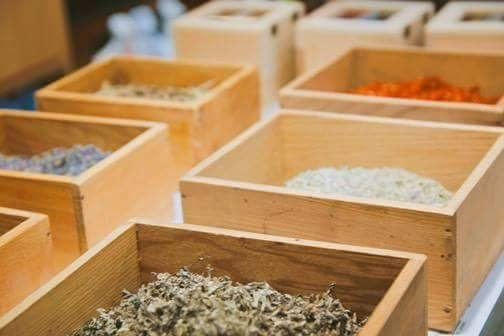

偏方
2017-10-07

大家好，我是老闆「那個誰」，人生苦短，不如聽個「故事」解解悶？
有人說月圓之夜照射的水可滋陰養顏；有人說吃胎盤可回春；有人說蟑螂泡酒可活血治病……。
有沒有根據？其實不重要。因為命比較重要，青春比較重要，說到底，有吃才有機會，沒吃也無所謂。
偏方真正偏的不是藥，是心，偏心的背後，又有多少濟世救苦、草菅人命、落魄失敗或極其無聊的故事。
故事背後述說著多少人，就有多少個「走偏」的人生，全都是因為走不了「正」，才冀望「偏」。一個病到束手無策卻渴望明天的老人；一個怪病癱瘓仍懷抱希望的少年；一個無病無痛但心病難醫的女孩……族繁不及備載，那些被正確、正統、正常所遺落的人們，通通都只能轉頭眺看偏方，尋求一個希望、一個慰藉。
偏偏偏方可能是句溫柔的謊言，亦可能是帖失傳的良方，恰似一場豪賭，賭注不是錢、不是命，是你對世間的信任。
可能賭一次、可能賭三次，若你從來不賭，老闆我打從心底恭喜、恭喜你。因為那致命挫心的危機，以及無能為力的痛苦尚未向你襲來。
偏方究竟靈不靈，唯有吃過的人才曉得，或許我們每日都得吃下許多偏方，才可度過許多痛苦、怨恨、忌妒、悲傷和無奈的時刻，像我桌上這帖客人忘記帶走的聰明藥，想必也說著一個長長的故事吧。
--無論你是誰，給我你的故事，我告訴你不知道的故事—
★ Photo credit：#順發中藥房